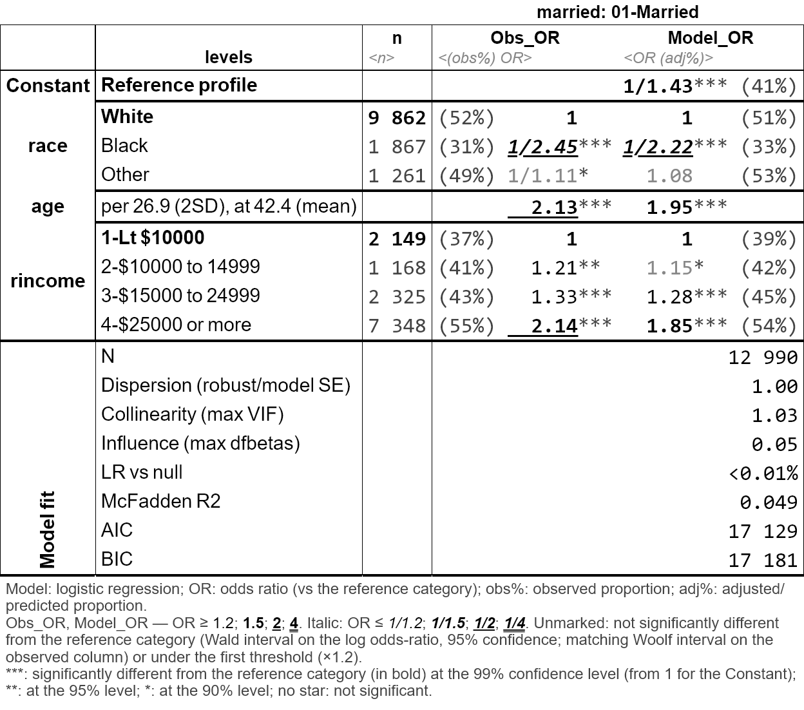

tabxplor makes cross-tables and regression models readable at a glance for data exploration. It builds a table with percentages, weighted counts, confidence intervals, tests — and colors highlight the cells that stand out from the total or reference, only when the difference is statistically solid, to spot the structure of your data immediately.
- Colors encode effect size and significance: the stronger the difference, the deeper the color; non-significant cells are greyed-out.
- Html, Excel and markdown/Quarto exports are available.
- It comes with a point-and-click jamovi graphical interface: no code needed.
- A black-and-white
theme = "print_ready"renders the same reading for journals. - Regression models are presented with the same visual language, next to their observed effect.
- In R the tables are
tibbles you can keep working on withdplyr. Cells are rich values, each one carries its count, percentage, confidence interval and reference behind the displayed number. - Weighted data and survey design are supported.
Installation
install.packages("tabxplor", dependencies = TRUE)A quick look
A simple cross-table with row percentages: shades of blue mean the cell is over-represented compared to the total row, shades of yellow to red mean it is under-represented.
gss <- gss_cat_data_formatting() # cleaned-up version of forcats::gss_cat
tab(gss, race, party3, pct = "row", color = "difference")| party3 | |||||
|---|---|---|---|---|---|
| race | 1-Democrat |
2-Independent, other |
3-Republican | NA | Total |
| <row%> | <row% (n)> | ||||
| White | 39% | 21% | 40% | 1% | 100% (16 395) |
| Black | 75% | 16% | 8% | 1% | 100% ( 3 129) |
| Other | 48% | 32% | 18% | 1% | 100% ( 1 959) |
| Total | 45% | 21% | 33% | 1% | 100% (21 483) |
|
Percentage points (risk) difference: cell ≥ the Total row +5; +10; +20; +30 points; cell ≤ the Total row -5; -10; -20; -30 points. |
|||||
Several column variables can be crossed at once for series of Yes/No survey questions. With color_signif = "grey_non_signif", cells that are not significantly different from the total are greyed out, so every colored figure is a solid one. Use wt = for weighted or survey data. Example with FactoMineR tea data :
tea_when_vars <- c("breakfast", "tea.time", "evening", "lunch", "dinner", "always")
tab(facto_tea, SPC, all_of(tea_when_vars), pct = "row",
levels = "first", na = "drop",
color = "difference", ref = "first", color_signif = "grey_non_signif")| breakfast | tea.time | evening | lunch | dinner | always | ||
|---|---|---|---|---|---|---|---|
| SPC | n | breakfast_lv | tea time | evening_lv | lunch_lv | dinner_lv | always_lv |
| <n> | <row%> | <row%> | <row%> | <row%> | <row%> | <row%> | |
| employee | 59 | 49% | 53% | 44% | 7% | 14% | 34% |
| middle | 40 | 60% | 48% | 30% | 5% | 0% | 28% |
| non-worker | 64 | 44% | 59% | 20% | 20% | 3% | 23% |
| other worker | 20 | 40% | 60% | 40% | 0% | 10% | 35% |
| senior | 35 | 63% | 57% | 31% | 26% | 3% | 34% |
| student | 70 | 43% | 61% | 44% | 21% | 7% | 50% |
| workman | 12 | 25% | 50% | 17% | 8% | 25% | 25% |
| Total | 300 | 48% | 56% | 34% | 15% | 7% | 34% |
|
Percentage points (risk) difference: cell ≥ the reference category (in bold) +5; +10; +20; +30 points; cell ≤ ref -5; -10; -20; -30 points. Uncoloured: not significantly different from the reference category (Newcombe score interval, 95% confidence) or under the first colour threshold (±5 points). |
|||||||
The same visual language extends to regression models: tab_reg() detects a binary outcome and fits a logistic regression, coloring odds ratios by strength and greying the non-significant ones, with a default comparison between the modelised deviations and their crude/observed counterparts.
Logistic regression: married by race, age +1 more
| married: 01-Married | ||||
|---|---|---|---|---|
| levels | n | Obs_OR | Model_OR | |
| <n> | <(obs%) OR> | <OR (adj%)> | ||
| Constant | Reference profile | 1/1.43*** (41%) | ||
| race | White | 9 862 | (52%) 1 | 1 (51%) |
| Black | 1 867 | (31%) 1/2.45*** | 1/2.22*** (33%) | |
| Other | 1 261 | (49%) 1/1.11* | 1.08 (53%) | |
| age | per 26.9 (2SD), at 42.4 (mean) | 2.13*** | 1.95*** | |
| rincome | 1-Lt $10000 | 2 149 | (37%) 1 | 1 (39%) |
| 2-$10000 to 14999 | 1 168 | (41%) 1.21** | 1.15* (42%) | |
| 3-$15000 to 24999 | 2 325 | (43%) 1.33*** | 1.28*** (45%) | |
| 4-$25000 or more | 7 348 | (55%) 2.14*** | 1.85*** (54%) | |
| Model fit | N | 12 990 | ||
| Dispersion (robust/model SE) | 1.00 | |||
| Collinearity (max VIF) | 1.03 | |||
| Influence (max dfbetas) | 0.05 | |||
| LR vs null | <0.01% | |||
| McFadden R2 | 0.049 | |||
| AIC | 17 129 | |||
| BIC | 17 181 | |||
|
Model: logistic regression; OR: odds ratio (vs the reference category); obs%: observed proportion; adj%: adjusted/predicted proportion. |
||||
| outcome | numeric predictor | observed range | observed shape (central 95%) |
|---|---|---|---|
| p = %Married ; log(p/(1-p)) | age | 13-57% (OR 8.7) |
Or as a black and white table ready for publication:
options(tabxplor.theme = "print_ready")
tab_reg(gss, outcome = "married", predictors = c("race", "age", "rincome"))
Export your tables
Any table exports with its colors to Excel, html or markdown (for Word, copy-paste from Excel) :
Learn more
- Introduction to tabxplor — the place to start (aussi disponible en français).
- Regression tables with tab_reg() (aussi disponible en français).
- Reading a regression without losing sight of the percentages — a single analysis walked from a first cross-table to a finished sentence (aussi disponible en français).
- Weighted and survey data — the three levels of margin of error, and which one your file deserves (aussi disponible en français).
- Programming with tabxplor — many tables at once, custom workflows, options (aussi disponible en français).